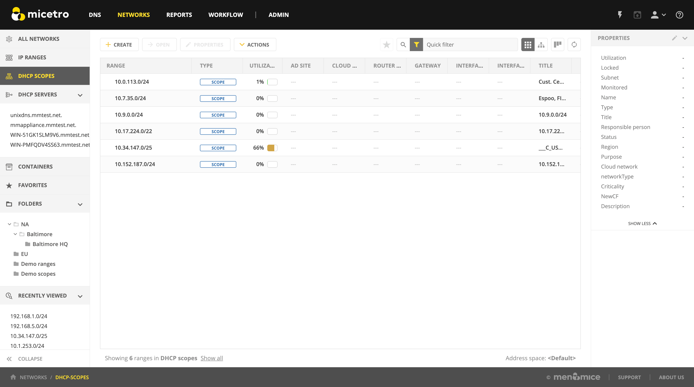
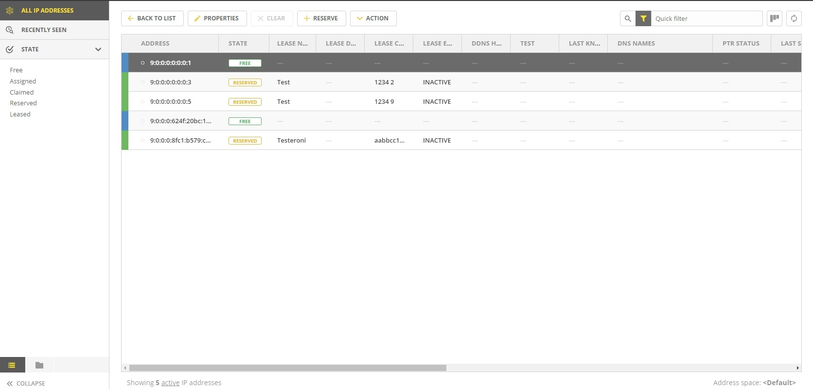
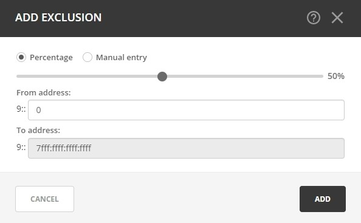
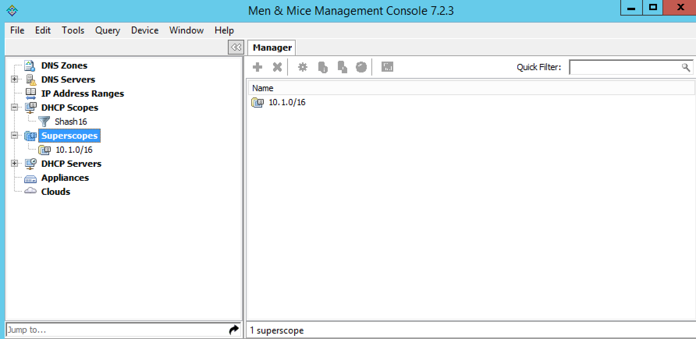
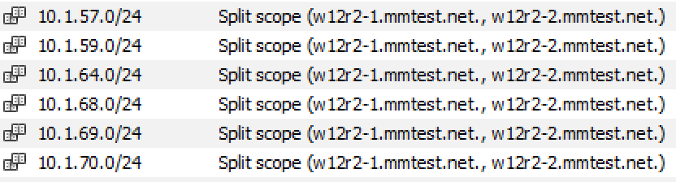

DHCP scopes
Note
To manage DHCP scopes in the Management console, see DHCP Scopes (Management Console, deprecated).
Overview
This section shows you how to perform specific actions in Micetro associated with maintaining your DHCP scopes, such as creating and modifying reservations, setting scope options and working with split scopes.
Viewing Scopes
All DHCP Scopes on All Servers
You can use the Web Application to view all of the existing DHCP scopes at once, regardless of the server to which they belong. In select DHCP scopes from the filtering sidebar on the left.
{kind=link}
The Utilization column in the scope list displays the utilization of available addresses within the address pool(s) of each scope.
Disabled scopes are shown as gray. The number of unassigned addresses is always shown as zero for disabled scopes.
Scopes on a Specific DHCP Server
It is easy to view the DHCP scopes that reside on individual DHCP Servers that are being managed by Micetro. In the context click the relevant DHCP server in the filtering sidebar’s DHCP servers section.
Viewing DHCPv6 Scopes
Unlike DHCPv4 scopes which display all the addresses within a scope, a DHCPv6 scope will only display addresses in use or which have been recently used. At the bottom of the web UI, a message will show how many active IP addresses are being shown. If there is an IP address with the status of free that IP address has recently been used, which can be seen by clicking on View History for that address.
{kind=link}
New DHCP scope
Note
Creating a scope on a Kea server configured for load balancing high availability, Micetro will automatically split the scope evenly between primary and secondary servers. See Kea DHCP High Availability.
This section describes how to create and edit DHCP scopes with the new DHCP Scope Creation Wizard.
Whenever you create a new scope, Micetro automatically checks whether the new scope conflicts with an existing scope or an IPAM range.
The Wizard has additional steps, or skips over some steps, depending on the type of DHCP server the scope is being created on, and whether the AD Sites and Subnets integration has been enabled.
To create a new scope on the MS DHCP server, do the following:
In use the Create action and select DHCP scope from the dropdown.
{kind=link}
Click Next.
Edit the options for the DHCP scope.
- DHCP server
The DHCP server for the scope.
- Enabled
If checked, the DHCP scope will start allocating IP addresses immediately. Uncheck it if you want to configure the scope further.
- Start/end of address pool
Adjust the first and last IP address in the pool.
Active Directory Site selection. If you have enabled AD Sites and Subnets, the Wizard will ask you which AD site the new DHCP Scope should be associated to.
Note
Leave it empty for no AD site.
Scope properties.
Summary. The changes the Wizard will perform are summarized here and applied once the user clicks “Finish”.
Save comment.
New DHCPv6 Scope
Under IPAM click on Create and select DHCP Scope
Enter the network information and click Next
Enter the DHCP Server name and the preference, and put a check next to Enabled if you’d like to enable this scope on this server. Click Next
Note
The preference value is a new parameter required by Microsoft for DHCPv6 scopes. If the scope is assigned to multiple servers, the lowest preference assignment will be selected by the DHCP client
Enter the title as an identifier for this scope as well as the description and click Next
Verify the information is correct and click Finish
Manage DHCPv6 Exclusions
When managing exclusions within a DHCPv6 pool it is possible to specify a percentage of a DHCPv6 scope rather than specifying a From address and To address
Select a DHCP scope while under IPAM >> DHCP scopes
Click Action and select Manage DHCP Exclusions
Click the Add Exclusion
A new pop up will appear. Choose to either create the exclusion range by Manual Entry or Percentage
5a. If you choose manual entry, input the From address and To address for the range you’d like to exclude from the DHCP scope
5b. If you choose percentage, drag the percentage bar to the correct percentage of addresses you’d like to exclude and enter a From address only
{kind=link}
Note
If the exclusion range doesn’t have the space to accomodate the percentage of IP addresses specified, it will not allow you to add this exclusion range until you pick an appropriate From address or lower the percentage.
Click on Add
- Red bar
The exclusion range
- Blue bar
Address Pool of dynamic allocation addresses
{kind=link}
Click Save
Access
For complete details on this function, refer to Access control.
Scope Migration Wizard (Management Console)
The Scope Migration Wizard allows users to migrate one or more scopes from one server to another, including all data in the scope.
To migrate a scope, do the following:
In the Manager window, select one or more scopes.
Right-click and, from the shortcut menu, select Migrate Scope. The Migrate Scope(s) Wizard dialog box displays.
- Server
Click the drop-down list and select onto which you want to migrate this scope(s).
Click Next. The Migration Options dialog box displays.
For each of the resulting screens, make a selection/entry and move through the wizard.
Duplication Wizard (Management Console)
To duplicate a DHCP scope you should use the Duplicate Scope wizard. The duplicate will initially have the exact same properties as the original, but you will have the option to assign the duplicate to a different DHCP server and modify the duplicated values.
Within this wizard, you can do the following:
Create a new scope
Create a split scope interface
To launch the wizard, do the following:
In the Object Section, click on DHCP Scopes.
In the Object List, right-click on the DHCP Scope you want to duplicate and, from the shortcut menu, select Duplicate. The Duplicate scope wizard launches.
For each of the resulting screens, make a selection/entry and move through the wizard.
Folders
Refer to Object folders for details on this function.
Reconcile Scopes
Note
Applies to MS DHCP Servers only.
Use this function to fix inconsistencies between information in the registry and the DHCP database.
Go to IPAM in the web UI
Select DHCP Scopes
Select one or multiple DHCP Scopes from Microsoft Servers
Click on the ellipsis (or meatball) menu on the scope(s)
Click on Reconcile DHCP Scopes
If there are inconsistencies, a list will be presented. Click Fix to fix the inconsistincies.
{kind=link}
For more information see the Microsoft documentation.
Scope Policies (Windows Server 2012 or newer) (Management Console)
If you are managing DHCP servers on Windows Server 2012 or newer, you can use Micetro to set scope policies for individual scopes.
Activate/Deactivate a Scope Policy
In the Scope List, right-click a scope that is stored on a Windows 2012 DHCP server.
From the shortcut menu, select Manage Policies. The DHCP Scope Policy Management dialog box displays.
The dialog box shows the current status of DHCP scope policies for the selected scope.
To activate DHCP scope polices, click the Activate button. If DHCP scope polices are active, the button text shows Deactivate. To deactivate the DHCP scope policies, click the Deactivate button.
Click Close.
Add a New Scope Policy
In the Scope List, right-click a scope that is stored on a Windows 2012 DHCP server and, from the shortcut menu, select Manage Policies. The DHCP Scope Policy Management dialog box displays.
Click the Add button. The DHCP Policy dialog box displays.
Enter a name and description for the DHCP policy in the corresponding fields.
Click the Add button in the Conditions section to add a new condition for the DHCP policy. The DHCP Policy Condition dialog box displays.
Specify the condition you want to use and click OK to save the condition and close the dialog box. Note that you can enter multiple conditions for a DHCP policy by clicking the Add button in the DHCP Policy dialog box.
To edit or delete an existing DHCP Policy condition, select the condition from the list of DHCP Policy conditions, and click the corresponding button.
If there is more than one condition, you need to specify whether to use the OR or AND operator when evaluating the conditions. Select the corresponding radio button in the DHCP Policy dialog box.
Ranges
Click the Add button in the ranges section to specify an IP Address range that should be affected by the policy. The Range specification dialog box displays.
Enter the range using the from and to addresses separated by a hyphen (for example, 192.168.1.10-192.168.1.20).
Click the Add button to add the range and close the dialog box. NOTE: You can enter multiple ranges by using the Add Range dialog box for each range you want to add.
To edit or delete an existing range, select the range from the list of ranges, and click the corresponding button.
When you have added all conditions and ranges, click the OK button to save the DHCP policy.
DNS Dynamic Updates
Options specific to dynamic updates are in the field named DNS Dynamic Updates. It can be configured accordingly for the policy.
Lease duration
The lease duration can be specified per policy in those fields.
DHCP Options
To specify DHCP options for this policy, click the Options button. That will open a dialog which will allow the user to specify the options.
Note
If this is unconfigured, the options will be inherited from the scope or server.
Change an Existing Scope Policy
You can edit, delete or disable existing DHCP Scope Policies. You can also change the order of DHCP scope policies.
In the Scope List, right-click a scope that is stored on a Windows 2012 DHCP server and, from the shortcut menu, select Manage Policies. The DHCP Scope Policy Management dialog box displays.
Select the DHCP Policy you want to work with by clicking it in the list of DHCP Policies.
To edit the policy, click the Edit button.
To delete the policy, click the Delete button.
To disable the policy, click the Disable button. If the policy is already disabled, the button text shows Enable. To enable the policy, click the button.
To move the policy up or down in the list of DHCP Policies, click the Move Up or Move Down button.
When you have completed your changes, click the Close button.
Other Functions
At any time, you can modify the properties for a scope. Simply locate the item, and from the ellipsis menu select Edit network properties. For split scopes, the scope contents can be examined individually on each server.
Deleting a Lease
To delete a lease in a DHCP scope, do the following:
Open the scope containing the lease you want to delete.
Select the lease and from the ellpisis menu select Release DHCP lease or use .
IP Address Details
The IP Address details window contains all information pertaining to an IP Address in Micetro, including DNS records, DHCP reservations, and custom properties. To access the IP address details select an IP address in the DHCP scope dialog, and all information is displayed in the Inspector, including information on any DNS and DHCP data associated with the IP address. A reservation can be created by clicking the + button in the Related DHCP data section of the Inspector.
Subranges of Scopes (Management Console)
It is possible to choose whether the contents of ranges that are created under scopes are displayed in a range view or a scope view. Use the Show DHCP data in subranges of scopes checkbox in the System Settings dialog box to choose the preferred display mode.
If the scope view is selected, a window similar to the scope window displays when you open a subrange of a scope. However, the only scope related action available in this window is reservation management. The access dialog box for these subranges will contain an additional access bit, Edit reservations.
If the range view is selected, the subranges are opened in the range view and no scope related actions are available.
Renaming a Scope
It is very simple to change the name and/or description of a scope in Micetro.
Locate and select the DHCP Scope you want to rename.
From the ellipsis menu, select Edit network properties.
Enter the Title, and any other value you wish to change.
Click Save.
Superscopes (Management Console)
Note
Superscopes are only supported on MS DHCP servers on Windows server.
All MS Superscopes are listed in the object section under the heading Superscopes.
{kind=link}
When you click on the Superscope, all scopes within that superscope display. In addition, a new column, Superscope, is shown in the scope list. It is possible to filter by this column.
To assign an existing scope to a superscope, do the following:
In the Object list, select a DHCP Scope for which you want to set a Superscope.
Right-click and, from the shortcut menu, select Properties. The scope dialog box displays.
Enter the name of the superscope in the Superscope field.
Click OK. The scope is placed in the superscope. If the superscope did not exist, the new superscope is created and now displays as a new item in the object list.
Moving IP Address Information (Management Console)
IP Address information can be moved to a new IP Address. When the IP Address information is moved, all information about the IP Address is retained, and the associated DNS records are updated. If a reservation is associated with the IP Address, the reservation information is moved with the IP Address if the destination address is in a DHCP scope that is hosted on a DHCP server of the same type. If the destination address is in a scope hosted on a different type of a DHCP server or the destination is in an IP Address range, the reservation information is discarded.
To move IP Address information, do the following:
Locate the IP scope containing the IP Address.
Double-click on it to display the scope contents.
Find the applicable IP Address.
Right-click and, from the shortcut menu, select Move.
In the Move IP Address Information dialog box, type the new IP Address.
Click OK. The IP Address information is moved to the new IP Address.
Host Discovery
With this feature, you can see when hosts were last seen on your network. There are two methods you can use for host discovery – using ping or querying routers for host information.
When host discovery is enabled, two columns are added to the range or scope view.
- Last Seen
This column identifies when a host was last seen on the network and which method was used to discover the host.
- Last Known MAC Address
This column shows the MAC address used by the host the last time it was seen on the network. This column is only populated if the host was seen using a router query.
Configuring Host Discovery Using Ping
Select one or more scopes.
From the ellipsis menu select Set Set discovery Schedule.
Check the Enable option.
- Frequency
Click the drop-down list and select the frequency (e.g., 1, 2, etc.).
- Every
Enter the frequency unit for discovery (e.g. days, weeks, etc.).
- Next run
Select the start date and time.
Click Save.
Once the schedule options have been set and saved, two columns - Last Seen and Last Known MAC Address - are added to the range or scope grid. The Last Seen column identifies when a host was last seen on the network.
- Green
Host responded to the last PING request. The date and time are shown.
- Orange
Host has responded in the past, but did not respond to the last PING request. The date and time of last response is shown.
- Red
Host has never responded to a PING request. The text Never is shown.
At any time if you wish to disable host discovery, do the following:
Select the object(s) for which you want to disable discovery.
From the ellipsis menu, select Set discovery schedule.
Uncheck the Enable option.
Click Save.
Configuring Host Discovery by Querying Routers (Management Console)
To collect information about hosts by querying routers, you must first enable collection of IP information from routers.
To configure host discovery:
Select an IP Address Range.
Right-click and, from the shortcut menu, select Configure IP Address Collection. The IP Address Collection dialog box displays
Enter the IP Address of the router(s) that you want to use to collect information about hosts in the range.
Click OK.
Failover Configurations and Split Scopes (Management Console)
Managing Failover Configurations (ISC DHCP)
This function allows you to manage DHCP failover peers on ISC DHCP servers.
Note
When adding a server’s first failover peer, all other address pools on the server will be updated to refer to this failover peer.
On the object menu, select the DHCP Server that contains the scope for which you want to setup failover configuration.
From the list of scopes, double-click on the applicable one.
From the list of IP Addresses, right-click on the applicable one, and select Create Address Pool from the shortcut menu. The DHCP Address Pool dialog box displays.
Move to the Failover Peer field, and click the drop-down list arrow.
Select Add new failover peer.
Click OK. The New Failover Peer dialog box displays.
- Name
Specifies the name of the failover peer.
- Role
Specifies the role of the failover peer. The available roles are Primary and Secondary.
- Address
Specifies the IP Address or DNS name on which the server should listen for connections from its failover peer.
- Port
Specifies the port number on which the server should listen for connections from its failover peer.
- Peer Address
Specifies the IP Address or DNS name to which the server should connect to reach its failover peer for failover messages.
- Peer Port
Specifies the port number to which the server should connect to reach its failover peer for failover messages.
- Max Response Delay
Specifies the number of seconds that may pass without the server receiving a message from its failover peer before it assumes that the connection has failed.
- Max Unacked Updates
Specifies the number of messages the server can send before receiving an acknowledgement from its failover peer. According to ISC documentation, 10 seems to be a good value.
- Max Client Lead Time
Specifies the number of seconds for which a lease can be renewed by either server without contacting the other. Only specified on the primary failover peer.
- Split Index
Specifies the split between the primary and secondary failover peer for the purposes of load balancing. According to ISC documentation, 128 is really the only meaningful value. Only specified on the primary failover peer.
- Load Balance Max Seconds
Specifies the cutoff in seconds after which load balancing is disabled. According to ISC documentation, a value of 3 or 5 is recommended.
Click OK. The DHCP Address Pool dialog box displays and shows the updated information.
Click OK.
If you need to EDIT or DELETE an existing failover peer, do the following:
Locate the relevant ISC DHCP server.
Right-click and, from the shortcut menu, select Manage Failover Peers. The Failover Peers for … dialog box displays. All failover peers are shown.
To EDIT a failover peer, select it and click the Edit button. Then modify the Failover Peers … properties dialog box, as needed.
To DELETE a failover peer, select it and click the Delete button.
Note
In order to finalize the setup of the failover relationship, the scope needs to be migrated to the failover peer.
Note
When deleting a failover peer through this dialog, if it is the last failover peer defined on the server, any references to it will be removed from existing address pools on the server. If there is one other failover peer left on the server, references to the failover peer being deleted will be changed to refer to the remaining failover peer. If, however, there are two or more other failover peers left on the server, the user will be prompted with a list of the remaining failover peers where he will have to choose which failover peer should be referenced by address pools currently referring to the failover peer being deleted.
Note
When changing from one failover peer to another for some specific address pool, if the address pool is the last one referring to the (old) failover peer, the user will be warned that performing the action will result in the deletion of the failover peer.
Managing Failover Configurations (Windows Server 2012)
DHCP failover on Windows Server 2012 enables high availability of DHCP services by synchronizing IP Address lease information between two DHCP servers. It is also possible to use DHCP failover to provide load balancing of DHCP requests.
You can configure failover for a single scope or for multiple scopes on the same server.
Note
To manage failover between two Windows 2012 Servers, the DHCP Server Controller must be running as a service account with enough privileges to manage the DHCP service. For more information, refer to the Men&Mice DHCP Server Controller section in the Installation Guide.
Setting up a Scope Failover
To setup failover for a scope, do the following:
On the object menu, select the DHCP Server that contains the scope(s) for which you want to setup failover configuration.
You have two ways to choose the scopes you want to configure.
From the list of scopes, select one or more scopes, right-click and select Configure Failover.
Right-click the DHCP server and select Configure Failover. A dialog box listing all configurable scopes displays. Select the scopes you want to configure and click Next. The failover configuration dialog box displays.
- Relationship Name
Select the relationship you want to use for the failover configuration or enter a name if you want to create a new relationship. If you choose an existing relationship, you will not be able to change any of the relationship properties and you can simply click OK to complete the failover configuration for the scope.
- Partner Server
Enter the name or IP Address of the partner DHCP server with which failover should be configured. You can select from the list of Windows Server 2012 machines or you can type the host name or IP Address of the partner server.
- Mode
Select the failover mode you want to use. You can choose between Hot standby and Load balance.
- Role of Partner Server
If you chose the Hot standby mode, you must choose the role of the partner server. You can choose between Standby and Active. If you choose Standby the current server will be Active and vice versa.
- Maximum Client Lead Time
If you don’t want to use the default values, enter the new values in the hours and minutes edit fields.
- Addresses reserved for standby server
If you chose the Hot standby mode, you must enter the percentage of addresses that should be reserved to the standby server.
- Local server load balance percentage
If you chose the Load balance mode, you need to specify the load balance percentage to use on the local server. The remaining percentage will be used on the partner server.
- State Switchover Interval
Select this checkbox if you want to use Automatic State Switchover and specify the interval to use.
- Enable Message Authentication
Select this checkbox if you want to use message authentication between the DHCP servers. If the message authentication is enabled, you must provide a shared secret for the message authentication.
Removing a Failover Configuration
On the object menu, select the DHCP Server that contains the scope(s) for which you want to remove the failover configuration.
Select one or more scopes, right-click the selection and select Deconfigure Failover. A confirmation dialog box displays.
Click Yes to confirm the action. The failover configuration for the selected scope(s) is removed.
Replicating Failover Scopes
When using a failover configuration, it is possible to replicate scope information between servers. This is possible for individual scopes, all scopes that share a failover relationship or all scopes on a particular DHCP server. When a scope replication takes place, the scopes on the selected DHCP are considered the source scopes and the entire scope contents are replaced on the destination server.
To replicate individual scopes:
On the object menu, select the DHCP Server that contains the scope(s) you want to replicate.
Select one or more scopes, right-click the selection and select Replicate Scope. A confirmation dialog box displays.
Click OK to confirm the action. The selected scope is replicated.
To replicate all scopes that share a failover relationship:
On the object menu, select the DHCP Server that contains the scopes you want to replicate.
Right-click a scope using the desired relationship, and select Replicate Relationship. A confirmation dialog box displays.
Click OK to confirm the action. The scopes that use the same relationship as the selected scope are replicated. Note that this action may take some time if multiple scopes use the relationship.
To replicate all failover scopes on a DHCP server:
On the object menu, right-click the DHCP Server that contains the scopes you want to replicate and select Replicate Failover Scopes from the menu. A confirmation dialog box displays.
Click OK to confirm the action. All failover scopes on the selected server are replicated. Note that this action may take some time if the server contains multiple failover scopes.
Managing Failover Relationships
Note
In the Web Application, the failover mode, as well as the failover partners, is displayed in the Inspector’s High availability section when a server or scope is selected that is configured for high availability.
You can view, create, edit and delete existing failover relationships.
Adding a Failover Relationship
On the object menu, right-click the DHCP Server and select Manage Failover Relationships from the menu. A dialog box listing the current failover relationships displays.
Click the Add button. A dialog box displays, listing all scopes that are available to be configured for high availability.
Select the scope(s) you want to configure. To select all scopes, click the Select all checkbox. Click Next. The failover configuration dialog box displays.
Setup the failover configuration for the selected scopes.
Editing an Existing Failover Relationship
On the object menu, right-click the DHCP Server and select Manage Failover Relationships from the menu. A dialog box listing the current failover relationships displays.
Click the Edit button. The failover configuration dialog box displays. Note that some properties are disabled and cannot be changed.
Edit the failover configuration and click OK to save the settings.
You can delete existing failover relationships. When a failover relationship is deleted, the scopes are not removed from the DHCP server, but they are no longer in a failover configuration. After removing the failover relationship Micetro will handle the affected scopes as split scopes.
Deleting a Failover Relationship
On the object menu, right-click on the DHCP Server, and select Manage Failover Relationships from the menu. A dialog box listing the current failover relationships displays.
Click the Delete button and click Yes in the confirmation dialog box.
Split Scopes
When a scope is hosted on multiple servers, the scope view lists all the servers that contain a copy of the scope. For scopes on MS servers, the line says ‘Split Scope’ and then lists the servers. For the ISC DHCP server, the line says ‘Multiple Instances’ and then lists the servers:
{kind=link}
Micetro detects when a split scope configuration is in place. Split scopes are handled as follows:
In the scope list, split scopes are shown with a different icon and in the server column, the text “split scope” displays
When performing various actions on scopes (for example enable/disable, scope option changes, scope deletion), a dialog box displays where the user is asked to specify to which instances of the split scope the action should be applied.
The DHCP scope window will show every instance of the split scope in a separate tab, making it possible to work with all instances of the split scope in a single window.
The Overview and Statistics tab in the DHCP scope window will show a graphical overview for all of the split scope instances.
Reservations are managed automatically. All changes to reservations (creation, modification, and deletion) are applied to all instances of the split scope.
The servers listed in this dialog box all contain the scope to which the user was applying the change. By pressing the Enable button, all instances of the scope would be enabled.
Note
Split scopes are only supported on MS DHCP and ISC Kea servers.
Managing Split Scopes for DHCPv6
Select a DHCPv6 scope under IPAM >> DHCP Scopes
Click on Action and Manage Scope Instances
From the drop-down menu select a second server to manage the DHCP scope and click Add and enable the servers on which the split-scope should reside
Note
You can change the preference of the servers by clicking and dragging on the hamburger icon (three lines to the left of the server) to change the order of the servers. The second server will always have a preference of the First Server Preference + 1 and each additional server will increment by 1.
Click Save
{kind=link}
On the same scope, click the Action menu and then select Manage DHCP Exclusions
Click on Add Exclusion for the first server and select the percentage for which you’d like to exclude from the first server and click Add
Click on Add Exclusion for the second server and select the percentage for which you’d like to exclude from the second server and click Add
{kind=link}
Click Save